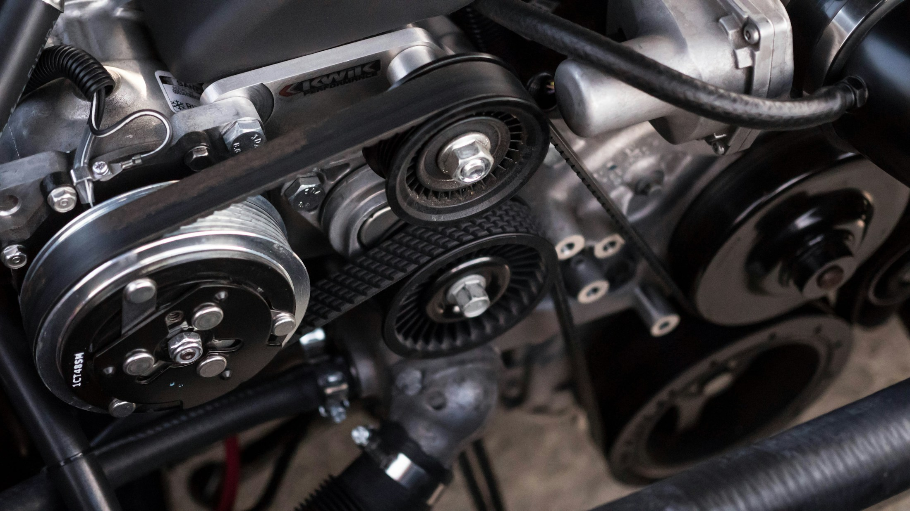
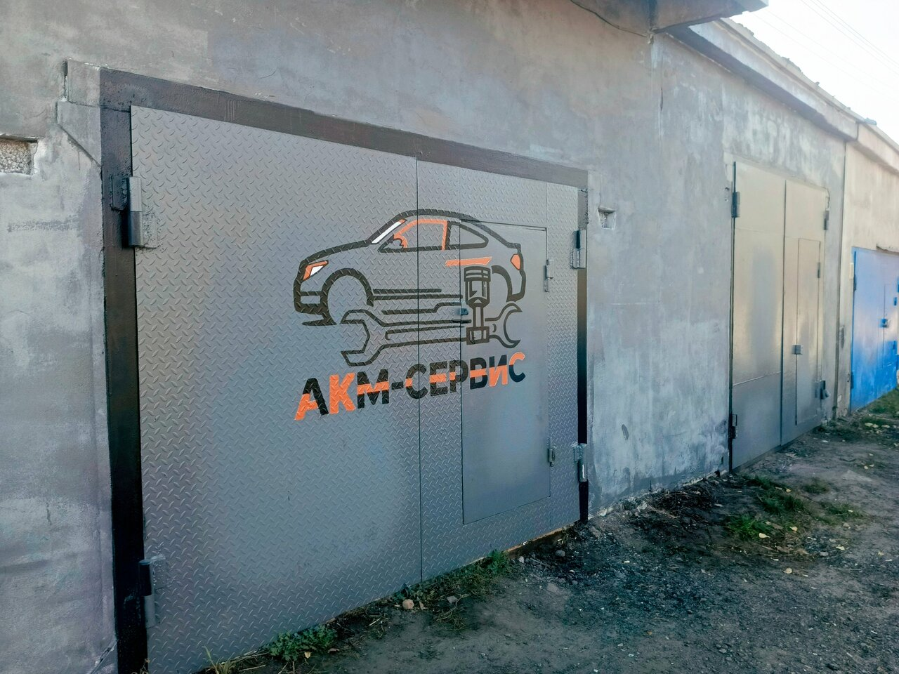

Защита на перспективу
Кузов под
защитой.
Полная антикоррозионная обработка — чтобы влага, реагенты и время оставляли меньше следов на вашем автомобиле.
Стоимость — после уточнения работ
Старый Оскол · Автосервис Корягина и Милешина
От защиты кузова до ремонта двигателя.
Ваш автомобиль в надёжных руках.

Услуги АКМ
Внимание к каждой деталиРазберёмся в причине неисправности
и поможем вернуть уверенность за рулём.
Полная антикоррозионная обработка — чтобы влага, реагенты и время оставляли меньше следов на вашем автомобиле.
Люди за названием
АКМ — автосервис Корягина и Милешина.
За названием стоят люди, с которыми
вы можете поговорить лично.
Обсудим, что беспокоит в автомобиле, и объясним, какие работы необходимы.
Уточняйте стоимость ремонта напрямую у мастеров — с учётом вашего автомобиля и задачи.
Квалифицированный ремонт и гарантия качества. Условия гарантии обсудим перед началом работ.
Всё просто
Позвоните Дмитрию или Владимиру,
либо напишите в сообщения VK.
Марка, модель и что беспокоит.
Уточним задачу и удобное время.
Согласуем необходимые работы
и займёмся вашим автомобилем.
Полезно знать
Позвоните или напишите нам в VK. Расскажите о марке, модели и неисправности. Стоимость зависит от объёма работ и состояния автомобиля; точную сумму обсудим после уточнения задачи.
Да. Откройте наше сообщество по кнопке «Написать в VK» и отправьте личное сообщение. Укажите автомобиль, нужную услугу и удобное время для связи.
Да, полная антикоррозионная обработка — одно из направлений АКМ Сервис. Подробности обработки, подготовку автомобиля и стоимость уточните у мастеров.
Мы находимся в Старом Осколе, в ГСК «Металлург-3». Работаем ежедневно с 08:00 до 20:00. В разделе контактов есть карта и кнопка построения маршрута. Перед визитом согласуйте время с мастером.
Всегда на связи
Старый Оскол ●Хорошая поездка начинается
с исправного автомобиля.
Давайте позаботимся о вашем.

Ориентир для первого визита
Серые металлические ворота с чёрно-оранжевым логотипом АКМ. Узнаете их — значит, приехали по адресу.
Карта и маршрут нижеВстретимся в мастерской
Ежедневно · 08:00–20:00
Координаты: 51.295232, 37.877875 ↗
Перед визитом согласуйте время с мастером. Адрес, график и дополнительные виды работ — по карточке АКМ Сервис на Яндекс Картах.